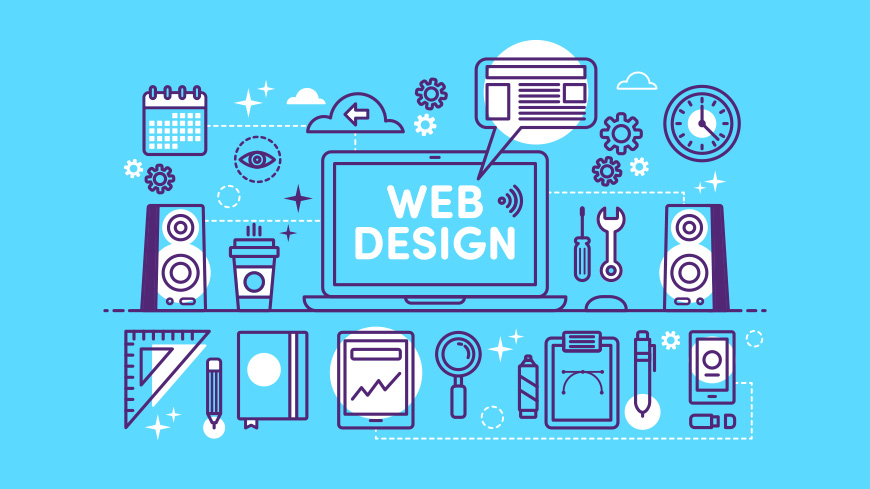

1. Math
This text will change and describe what I like about this class!

2. Science
This text will change and describe what I like about this class!
I have just one more thing to say!

3. WEB!
This text will change and describe what I like about this class!
